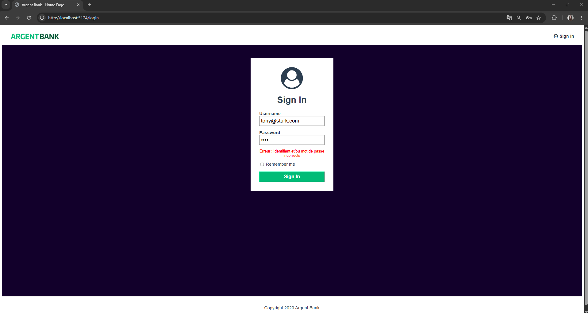
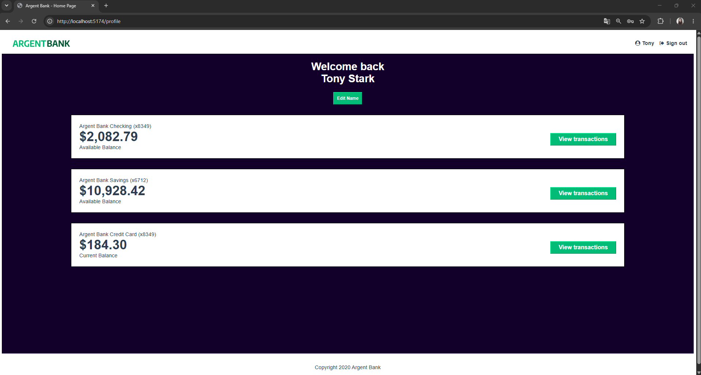
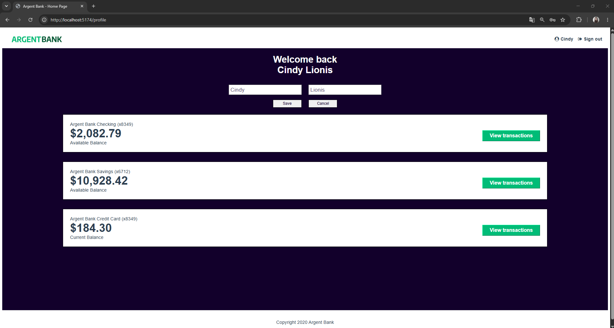
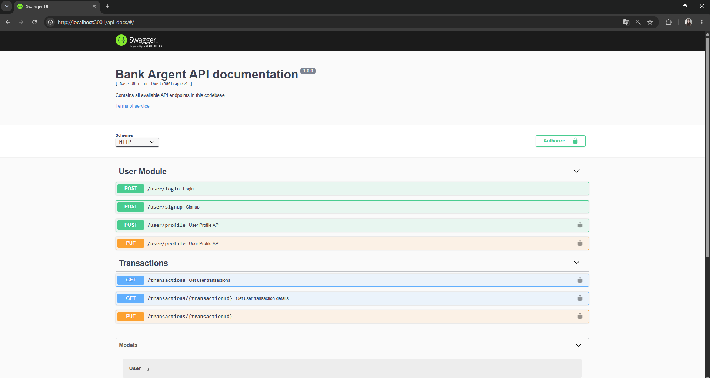

Argent Bank
Application bancaire développée avec React et Redux, permettant aux utilisateurs de consulter leur espace bancaire et de gérer leurs informations. L’application communique avec une API REST pour récupérer et modifier les données, avec une interface responsive pensée pour offrir une expérience utilisateur fluide.
Voir le projetType
Application web
Rôle
Développeuse Front-End
Outils utilisés
React • Redux • JavaScript • API REST

objectifs
Dans le cadre de ma formation de développeur d'application JavaScript React, j'ai réalisé cette application bancaire afin de mettre en pratique le développement d’une interface utilisateur avec React et la gestion de l’état global avec Redux.
L’objectif du projet était de développer un tableau de bord bancaire responsive, permettant aux utilisateurs de consulter et de gérer leurs informations. L’application a également été connectée à une API REST afin d’assurer la communication entre le front-end et le back-end et de manipuler les données liées aux utilisateurs et aux transactions.
Processus
Les différentes étapes du projet
Phase 1 — Authentification et gestion du profil
J’ai développé le système d’authentification des utilisateurs permettant de se connecter et de se déconnecter de l’application. J’ai également mis en place la gestion des accès afin que chaque utilisateur puisse uniquement consulter ses propres informations après authentification.
J’ai ensuite développé la fonctionnalité de modification du profil, avec la sauvegarde des informations mises à jour dans la base de données.
Phase 2 — Gestion des transactions et API
J’ai participé à la mise en place de la gestion des transactions et à la définition des différentes routes de l’API REST. J’ai documenté les endpoints avec Swagger, en précisant pour chacun la méthode HTTP, la route, les paramètres attendus ainsi que les différents codes de réponse possibles.
Cette phase m’a permis de mettre en pratique la communication entre le front-end React et le back-end, ainsi que la conception et la documentation d’une API.




Retour d’expérience
Apprentissages & défis
Ce projet m’a permis de développer mes compétences en React et Redux, notamment dans la gestion de l’état global d’une application avec Redux Toolkit. J’ai également appris à utiliser Swagger pour documenter une API REST et à intégrer le front-end et le back-end grâce aux appels API.
La principale difficulté a été la prise en main de Redux et Redux Toolkit, notamment la compréhension de leur fonctionnement et la mise en place du store. J’ai dû comprendre comment organiser et centraliser les données de l’application afin de les rendre accessibles aux différents composants React.
Cette étape m’a permis de mieux comprendre la gestion d’un état global et de gagner en autonomie dans l’utilisation de Redux.

Projet suivant
HRnet
Modernisation de l’application HRNet avec React, avec pour objectif de remplacer progressivement les fonctionnalités jQuery par des composants React et d’évaluer les performances de la nouvelle version.